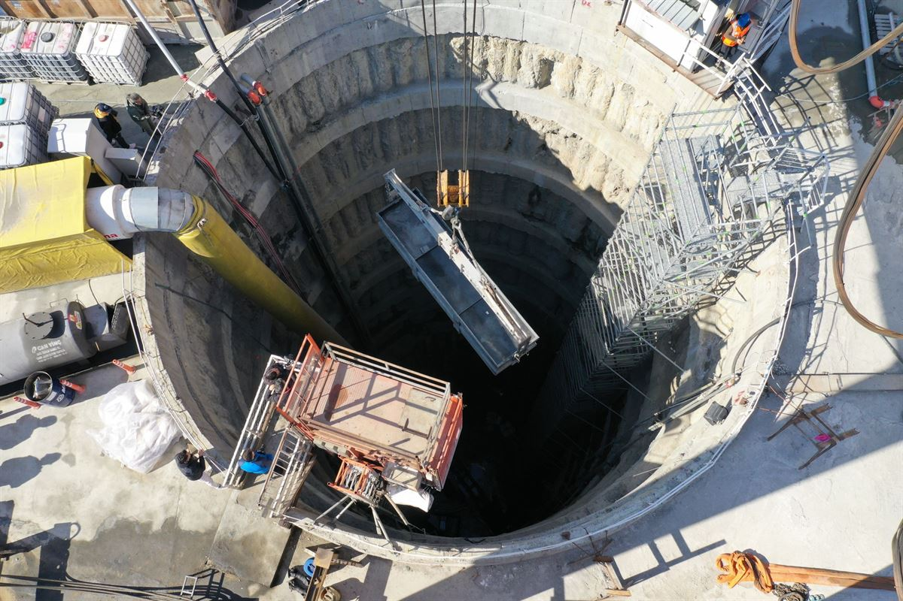

Sewage Pump Station Rebuild
City of Chattanooga. Complete demolition and reconstruction requiring a 35-foot specialty excavation for a new wet well, installation of all-new equipment, and a utility tie-in within a public roadway.
Pump Stations